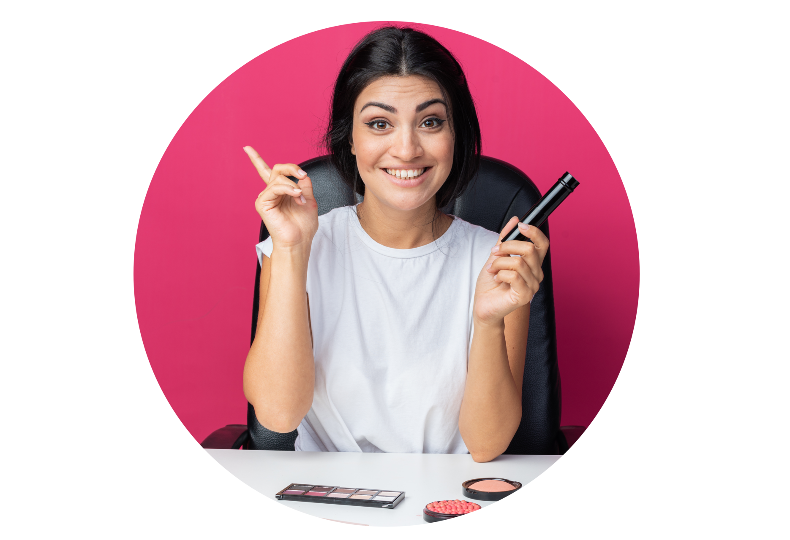

Подчеркните свою красоту с нашими услугами по бровям и ресницам!
Наши мастера помогут создать идеальный образ для вашего взгляда.
Запишитесь прямо сейчас!
Прайс-лист
Услуга
Цена (стандарт /топ мастер)
Уход и стайлинг

Совет от Анастасии визажиста-бровиста:
Для здоровья и красоты бровей и ресниц важно не только их стайлинг, но и правильный уход. Используйте специальные гели и сыворотки для роста и укрепления бровей и ресниц, которые питают волосяные фолликулы и улучшают их структуру. Также регулярно делайте маски для бровей и ресниц на основе натуральных масел и витаминов, чтобы поддерживать их здоровье и красоту.
При стайлинге бровей используйте гелевые и восковые текстуры, которые фиксируют форму и придают бровям выразительность и аккуратность. Ресницы можно укладывать при помощи специальной щёточки или использовать натуральные масла, чтобы укрепить и питать их, делая ресницы густыми и длинными.
Не забывайте также о правильном снятии макияжа с бровей и ресниц. Для этого используйте мягкие средства для снятия макияжа, чтобы избежать повреждения волосков и кожи вокруг глаз.
Тренды в макияже бровей и ресниц
Макияж бровей и ресниц – это неотъемлемая часть образа, которая может существенно изменить внешний вид и подчеркнуть индивидуальность. С каждым сезоном на подиумах появляются новые тренды, отражающие современные модные тенденции и направления в макияже.
Один из актуальных трендов – это придание естественности и непринуждённости макияжу бровей и ресниц. Теперь в моде тонкие, аккуратные брови без излишних акцентов, а также ресницы с легким приподнятым эффектом, создающим взгляд настоящей дамы.
Ещё один важный тренд – это акцент на форме и архитектуре. Брови и ресницы становятся объектом скрупулезной работы и внимания, их форма, длина и густота выделяются и подчеркиваются, что придаёт лицу выразительность и индивидуальность.
В последнее время также можно наблюдать тенденцию к экспериментам с цветом. Яркие и насыщенные оттенки становятся востребованными как в макияже бровей, так и в макияже ресниц, создавая необычный и запоминающийся образ.
Не останавливайтесь на достигнутом – экспериментируйте, подбирайте новые образы и открывайте для себя удивительный мир макияжа бровей и ресниц! А для более подробной информации и актуальных советов загляните в наш блог!